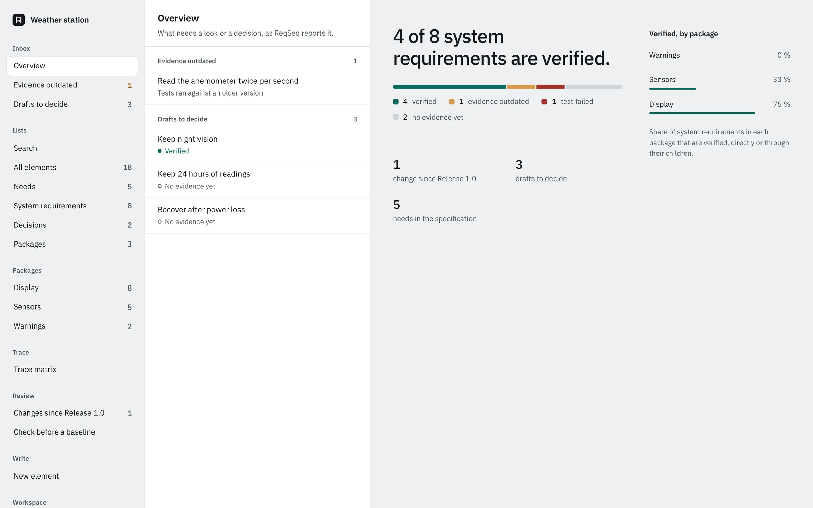
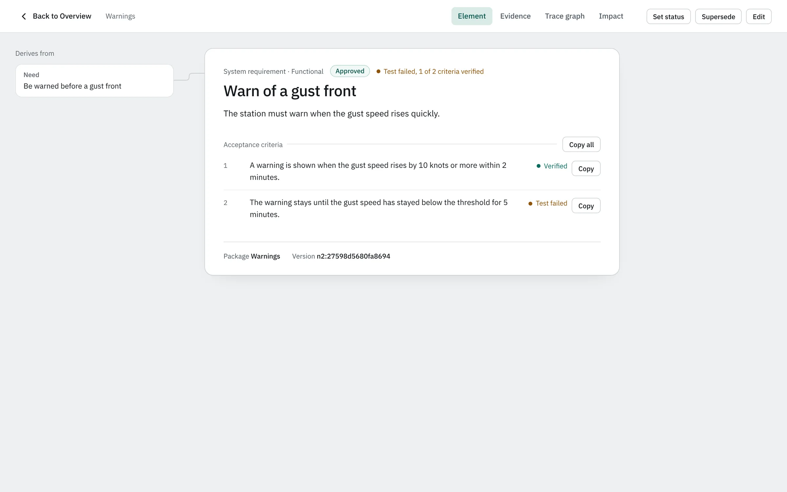
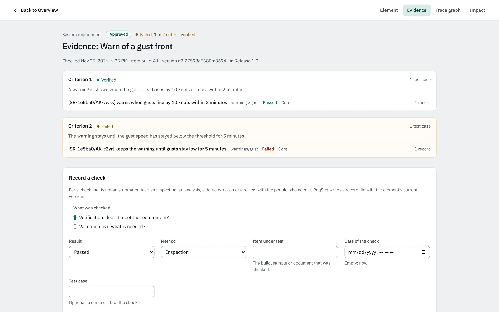
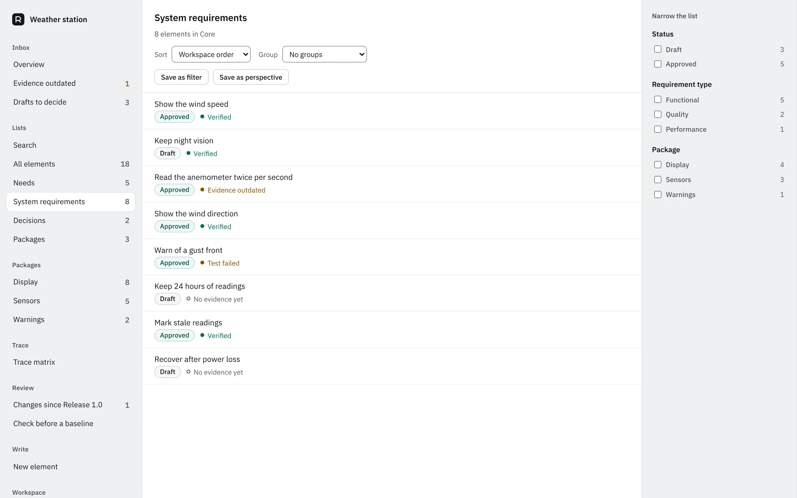
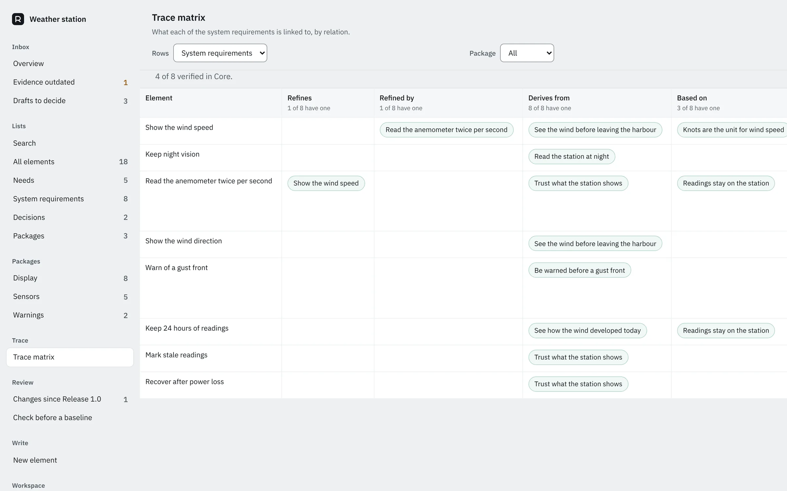
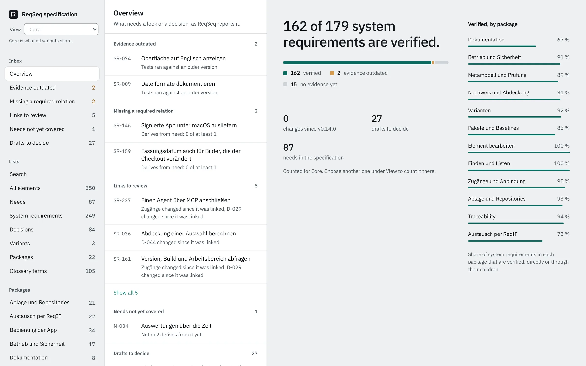

Tell your agent what you need. It breaks the need down into system requirements, acceptance criteria and tests, and ReqSeq traces them through to the evidence record of each test run. You keep the whole chain, not one specification document.
For macOS on Apple silicon, Linux x64 and Windows x64.
It runs on your computer and opens no network connection.
As a sailor, I want to see the wind speed as it is right now, before I leave the harbour.
- The speed is shown in knots, with one decimal.k7f3
- The value is at most 5 seconds old.q91q
- [SR-c67baa/AK-k7f3]shows the wind speed in knotsPassed
- [SR-c67baa/AK-q91q]updates the value in timePassed
The example from Get started. The versions are the ones ReqSeq 0.14.0 computes for these texts; the IDs and keys are examples.
Through your agent, in the web UI, or both.
Through your agent
You talk to your agent. It writes the needs, system requirements, acceptance criteria and tests, through ReqSeq's MCP server or CLI. Every command reports what the elements still lack, so the agent has its next step, even if you never open the web UI.
In the web UI
A requirements engineer works in the web UI, with or without an agent: writes and reviews requirements, sets their status, follows the trace and takes baselines. The web UI runs the same commands as the CLI and the MCP server.
Both work on the same Markdown files in your Git repository. Each way works on its own. Together, the agent writes and people decide.
Talk to your agent. It keeps the requirements.
ReqSeq does not run an agent itself. You talk to your own agent. It calls ReqSeq's commands, and the skill file that workspace init writes tells it how to work with them.
- You say what you need. In your agent's chat, in plain words.
- The agent writes the elements. A need, a system requirement with its acceptance criteria, and the relation between them, through the tools of the MCP server.
- ReqSeq answers with what is missing. Here the new requirement has no parent yet. The agent adds the relation, and the next answer names no problem.
As a sailor, I want to see the wind speed before I leave the harbour.
Your tests name the requirement. ReqSeq computes what is verified.
A test names the requirement and the acceptance criterion it checks, in its name. Any test tool that writes JUnit XML works, without a converter or plugin.
- One command adds the version.
evidence enrich-junitadds the current version of each named requirement to the JUnit file. - ReqSeq computes the status. Verified when the newest result for the current version passed. Outdated when the results are for an older version only.
- In a pipeline, the check decides.
workspace checkdecides by its exit code whether the step passes.
Requirements engineering in the web UI, with or without an agent.
reqseq ui starts the web UI on your computer and opens it in your browser. It works on the same files, through the same commands as your agent. Only people set a status.





Only your computer reaches the web UI, and only with the address reqseq ui prints. The desktop shell of the release shows the same pages in a window of its own. The web UI in the docs
Also in ReqSeq.
- Baselines
- A baseline is a named state that no longer changes. Later you see what changed since, word by word.
- Variants
- A variant builds on the shared core and replaces or excludes single requirements.
- ReqIF
- Import and export of ReqIF 1.2 files, to exchange requirements with other tools.
- Your metamodel
- Types, properties, relation kinds and statuses belong to the workspace. It starts with a standard model you can extend.
- HTML export
- The workspace as a folder of HTML pages that people read in a browser, without ReqSeq, Git or network.
- Checks that are no tests
- An inspection or a review is recorded as a verification record, for all acceptance criteria or for some.
Four ways in. The same commands, the same result.
The web UI, the CLI, the MCP server and the local API read and write the same Markdown files in your Git repository.
reqseq uireqseq element createreqseq mcpreqseq serve apiWhichever way in, ReqSeq runs the same commands on the same files: one Markdown file per element, with its properties in the frontmatter.
- 1A test names an acceptance criterion by its key.
- 2The relation keeps the version of the need. When the need changes, the relation shows as outdated, so you know to review the requirement.
reqseq workspace connect-agent with --client prints the setup that lets your agent's client start the MCP server for your workspace: Claude Code, VS Code, Codex CLI, Claude Desktop, Cursor, or a JSON block for any other client. Connect an AI agent
What ReqSeq never does.
It never opens a network connection.
Nothing is downloaded while unpacking or running, and nothing updates itself. The web UI and the local API answer on your computer only.
It never writes to Git.
ReqSeq reads Git. Committing stays with you.
It never sets a status.
Only people approve. What ReqSeq computes is the verification status, from the evidence records.
It never deletes an element.
An element that was approved or is in a baseline is superseded, so its history stays.
ReqSeq is built against its own specification.
Its system requirements are elements in a ReqSeq workspace, traced from the needs to the evidence of the tests. The specification is published as an HTML export with each release.

Try it in an empty folder.
- Download the archive for your system and unpack it. Unpacking is installing. ReqSeq needs
giton the path. - Create a workspace and connect your agent.
workspace initalso writes the skill file for your agent. - Tell your agent what you need. Or work by hand:
reqseq uiopens the web UI.